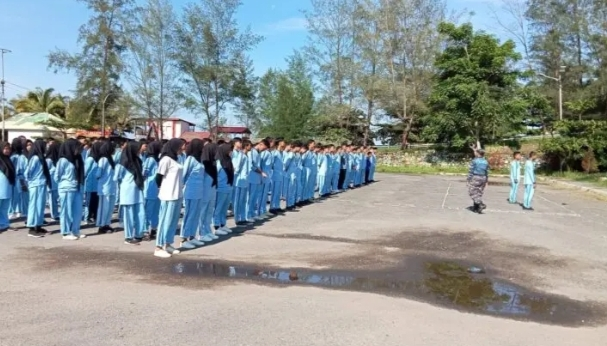

Tentang Sekolah
SMKN 4 Kota Bengkulu adalah sekolah menengah kejuruan yang berlokasi di Kota Bengkulu. Sekolah ini memiliki berbagai jurusan unggulan dan berkomitmen dalam mencetak lulusan yang siap kerja, berprestasi, dan berkarakter.
Visi dan Misi
Visi: Menjadi SMK unggulan yang menghasilkan lulusan kompeten, mandiri, dan berakhlak mulia.
Misi:
- Meningkatkan kualitas pendidikan dan pelatihan kejuruan.
- Menjalin kemitraan dengan dunia industri.
- Membentuk karakter siswa yang disiplin dan tangguh.
Gallery
Kontak
Alamat: JL. ENGGANO, Pasar Bengkulu, Kec. Sungai Serut, Kota Bengkulu Prov.
Email: info@smkn4bengkulu.sch.id
Telepon: (0736) 123456